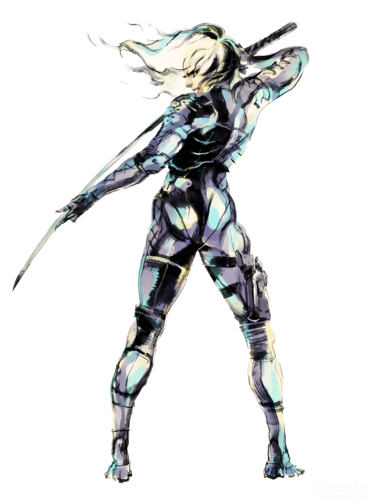
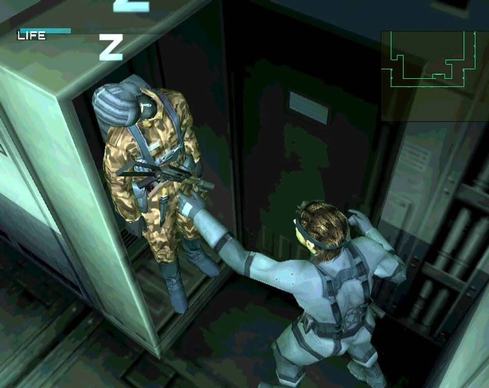
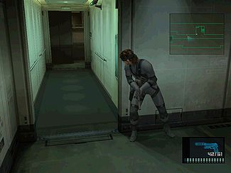

Algunos datos acerca de la obra
El personaje principal, Raiden, fue creado específicamente para el juego. El creador de la serie, Hideo Kojima, quería un personaje que fuera diferente al protagonista anterior, Solid Snake, y que pudiera aportar una nueva perspectiva a la historia.
En una escena del juego, el personaje Solid Snake se esconde en un armario y se puede escuchar una conversación en la que se mencionan varios personajes y eventos de la serie. Estos incluyen a Gray Fox, el protagonista de Metal Gear Solid, y a Frank Jaeger, el nombre real de Gray Fox.
El juego fue conocido por su innovadora jugabilidad, que combinaba elementos de acción, sigilo y aventura en un solo juego. También introdujo nuevas mecánicas, como el sistema de "suspense" que aumentaba la tensión del juego en momentos clave.
La música del juego fue compuesta por Harry Gregson-Williams y Nobuko Toda. La banda sonora incluye canciones icónicas como "Main Theme", "Tanker Incident" y "Yell 'Dead Cell'".
A continuación dejamos una tabla en donde se puede ver como se ordenan los videojuegos de la franquicia por orden cronológico.
| Nombre | Año |
|---|---|
| Metal Gear Solid 3: Snake Eater | 2004 |
| Metal Gear Solid: Portable Ops | 2006 |
| Metal Gear Solid: Peace Walker | 2010 |
| Metal Gear Solid V: Ground Zeroes | 2014 |
| Metal Gear Solid V: The Phantom Pain | 2015 |
| Metal Gear | 1987 |
| Metal Gear 2: Solid Snake | 1990 |
| Metal Gear Solid | 1997 |
| Metal Gear Solid 2: Sons of Liberty | 2001 |
| Metal Gear Solid 4: Guns of the Patriots | 2008 |
| Metal Gear Rising: Revengeance | 2013 |